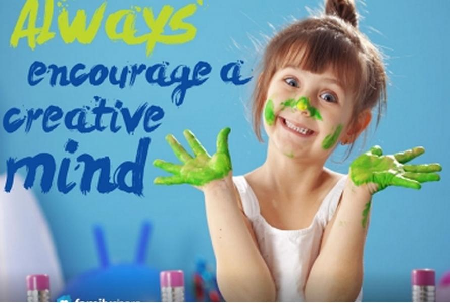
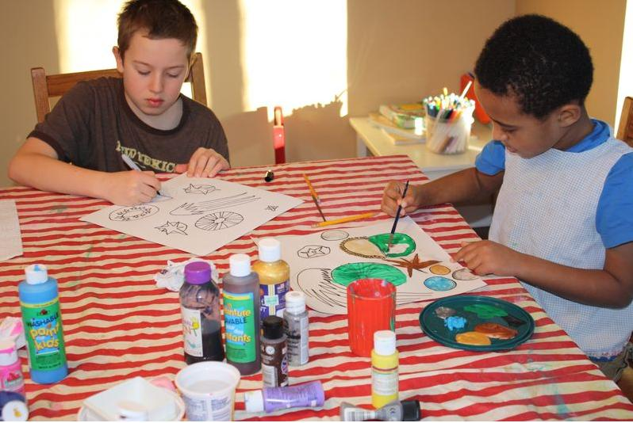

|
|
|
Home
|
Why ART Education for kids at early age ??
|
|  |
Art education is the area of learning that is based upon the visual, tangible arts-drawing, painting, sculpture, and design in jewellery, pottery, weaving, fabrics etc. and design applied to more practical fields such as commercial graphics and home furnishings. The arts cultivate the senses that trust the unmediated flash of insight as a legitimate source of knowledge.
The arts connect person and experience directly, building bridges between verbal and nonverbal, logic and emotion - the better to gain an understanding of the whole. Children naturally love art – painting, drawing, making music, the theater.
Creativity is the basic need of every subject. To study mathematics you have to be creative formulas and numbers. To study sciences one has to be creative with chemicals. To study physics one has to creative with laws and assumptions. All these subjects need creativity but the subject that makes kids creative is Arts.
Creativity is needed everywhere, in every subject. But arts education is the only subject which teaches how to be creative. |
Benefits of exposing Children to ART |
| Kids express things through their art that they don't even have words for yet. Kid learns to think creatively, with an open mind. Learns to observe and describe, analyze and interpret. Color not only affects our moods, it can also promote learning and creativity.Learns to express feelings, with or without words.Practices problem-solving skills, critical-thinking skills,dance,music,theater and art-making skills, language and vocabulary of the arts.
Discovers that there is more than one right answer, multiple points of view.School can be fun – playing can be learning. Learns to collaborate with other children and with adults.
Most of the parents, while selecting educational set of courses for their kid, give priority to mathematics and sciences and consider arts as just an extra option. But the fact is that arts education helps kids in visualizing things more vividly. This helps in understanding mathematical and scientifically concepts.
Arts education for kids is very important. It helps then to be complete human beings. It teaches creativity, patience, imaginations and acceptance of other’s work. |
 |
|  |
Arts introduce children to cultures from around the world.Can blossom and excel in the arts. Even with physical, emotional or learning challenges,can experience success in the arts. Arts build confidence and community.
Because there is not just one right way to make art, every child can feel pride in his or her original artistic creations. Schools with a variety of differences can celebrate the arts as one community.Unfortunately, when schools cut back on budgets,the arts are usually the first to go.The creative process provides opportunities to demonstrate multiple approaches to solving problems. Arts can make a critical difference in people’s lives.
Though many do not consider it important but Arts education plays an exceptionally essential, extremely significant and vital role in improving mental approach and character building.
Arts education is educating child about drawing, sketching, coloring, painting, crafts and other works related to these. |
Click here for Art Kit
Click here for online registration |
|
|
|